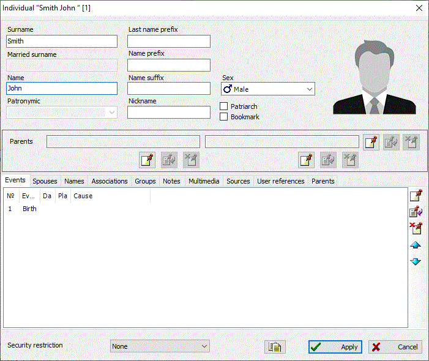

Person record is the most important record type in a genealogical database. Such record contains all information about a man. GEDKeeper allows you to store full name, nickname and sex in a person record. You can list all events and facts that relate to the person's life. Using GEDKeeper you easily investigate family and social relations of the person (associations with other people). GEDKeeper never restrict you in number of person's families and children. Also you can divide people by different social groups, add additional indicators to improve obviousness (references and footnotes), add unlimited number of notes, multimedia materials and sources, and add person's portraits to show them in trees.
This is the list of dialog's tabs and respective data categories you can change:
GEDKeeper splits new person creation process on to the two phases: adding and changing details. The first stage is a small dialog for adding new person.
But the second stage is a big dialog where you change person detailed information. The creation process get split on to the two stages to simplify adding diverse information about person, which may affect huge number of database records and relations. Had the creation process implemented with single window object, it would be very hard to undo all changes made by user in the window if user has cancelled creation (user might have added bulk information about person, then user cancelled changes and here GEDKeeper would had to remove already saved information from database). But this problem goes away if two-steps creation is used.

 ,
,  and
and  to the right of parent
names modifies parents' family as a whole object. That is, you can
use button to attach
affected person to an existing family. You use , button to modify
properties of already attached family without necessity to close
currently opened person editing window. You use to the right of parent
names to detach person from the family.,
and
to the right of parent
names modifies parents' family as a whole object. That is, you can
use button to attach
affected person to an existing family. You use , button to modify
properties of already attached family without necessity to close
currently opened person editing window. You use to the right of parent
names to detach person from the family.,
and  located under the name of
each parent perform other functions. button adds new family if one was not added already,
and then adds the concrete parent to this family (father or mother,
depending on the selected section). button removes a parent (father or mother) from
person's family. To quickly jump to a parent's person record
you use button., and . You can add any number
of events to the affected person, that are related to his/her life,
various attributes, notes, photos or other multimedia content, source
materials mention the person, marriages and groups. You use the special
list of associations to add additional relations between people.,
and buttons. When
you add or change one of conjoints, family editor window appears. Using
that window you do what you need: add a spouse, children or event.
Using arrow buttons you can change order or marriages for the selected
person.
located under the name of
each parent perform other functions. button adds new family if one was not added already,
and then adds the concrete parent to this family (father or mother,
depending on the selected section). button removes a parent (father or mother) from
person's family. To quickly jump to a parent's person record
you use button., and . You can add any number
of events to the affected person, that are related to his/her life,
various attributes, notes, photos or other multimedia content, source
materials mention the person, marriages and groups. You use the special
list of associations to add additional relations between people.,
and buttons. When
you add or change one of conjoints, family editor window appears. Using
that window you do what you need: add a spouse, children or event.
Using arrow buttons you can change order or marriages for the selected
person.There is a uniting table on the "Persons" tab of the main working window, which includes all persons available in database. Person summary to the right of the table shows all information about selected person and references to other records.